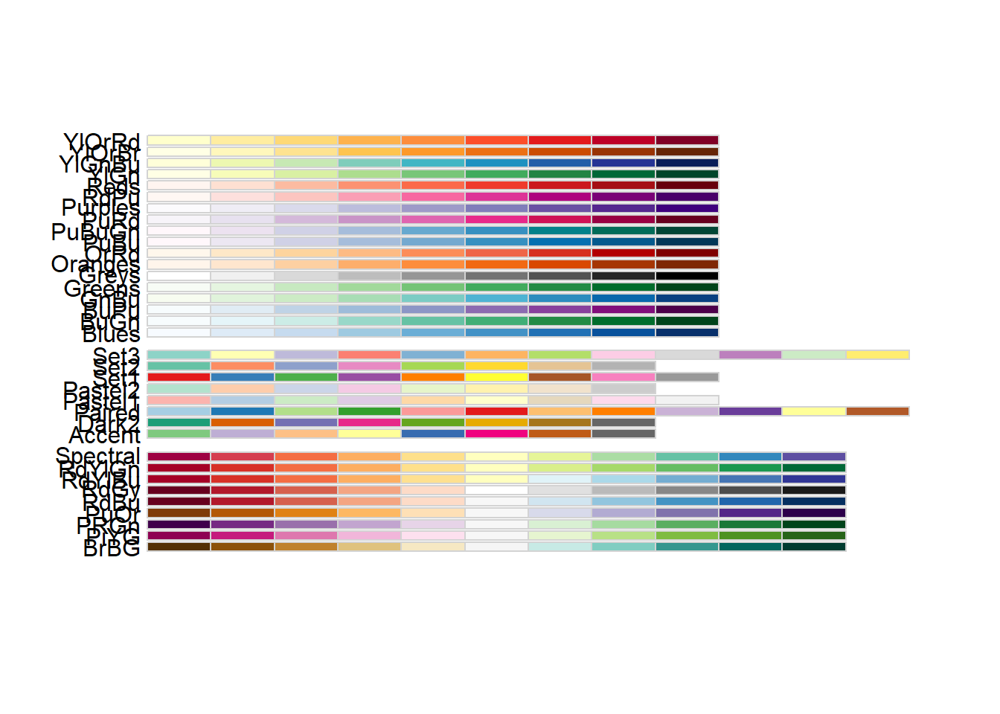

library(readxl)
library(tidyverse)
library(quanteda)
library(quanteda.textstats)
library(quanteda.textplots)
library(RColorBrewer)2 Pré-traitements
2.1 Introduction
Le document de travail contient deux types d’éléments : du texte pour expliquer et présenter ce que l’on fait et du code pour réaliser les manipulations de données, les analyses et les graphiques. On commence toujours un document avec un bloc de code de setup, pour lister et charger les packages que l’on va utiliser et les options générales pour l’édition du document.
Dans un premier temps, nous allons tout simplement charger la base de données de travail puis la décrire. Ensuite, nous créerons un corpus, le visualisons. Puis nous effectueront quelques analyses liminaires, avant de voir les pré-traitements à réaliser sur le corpus.
2.1.1 Les données
#On charge les données, stockées dans un fichier csv
data <- read_csv("data/data_trustpilot_oiseaux.csv")Rows: 4388 Columns: 7
── Column specification ────────────────────────────────────────────────────────
Delimiter: ","
chr (4): auteur, date, month, comments
dbl (3): id, year, note
ℹ Use `spec()` to retrieve the full column specification for this data.
ℹ Specify the column types or set `show_col_types = FALSE` to quiet this message.names(data)[1] "id" "auteur" "date" "month" "year" "note" "comments"view(data)
data# A tibble: 4,388 × 7
id auteur date month year note comments
<dbl> <chr> <chr> <chr> <dbl> <dbl> <chr>
1 1 MAQUET Cyril 07 août 2023 août 2023 5 "Comme to…
2 2 Mme Laurence Wolff 08 août 2023 août 2023 5 "Le délai…
3 3 Une nouvelle cliente 07 août 2023 août 2023 5 "Produits…
4 4 Patricia ALLAMAN 15 août 2023 août 2023 5 "Envoi ra…
5 5 VPL 24 juillet 2023 juillet 2023 5 "Expéditi…
6 6 PHILIPPE GODIN 08 août 2023 août 2023 5 "site sér…
7 7 Mme MARIA ADILIA PEREIRA 15 août 2023 août 2023 1 "deux sem…
8 8 Rachel Mattyssen 31 juillet 2023 juillet 2023 5 "Très bie…
9 9 Estelle Fay 16 juillet 2023 juillet 2023 5 "Enfin un…
10 10 Mme T. 06 août 2023 août 2023 4 "Satisfai…
# ℹ 4,378 more rows#Résumé des données
summary(data) id auteur date month
Min. : 1 Length:4388 Length:4388 Length:4388
1st Qu.:1098 Class :character Class :character Class :character
Median :2194 Mode :character Mode :character Mode :character
Mean :2194
3rd Qu.:3291
Max. :4388
year note comments
Min. :2013 Min. :1.000 Length:4388
1st Qu.:2018 1st Qu.:5.000 Class :character
Median :2020 Median :5.000 Mode :character
Mean :2019 Mean :4.641
3rd Qu.:2021 3rd Qu.:5.000
Max. :2023 Max. :5.000 2.1.2 Premières analyses/visualisations des données
Avant de s’intéresser au contenu des commentaires, explorons la structure des données. On va regarder la distribution des commentaires et des notes dans le temps, et s’intéresser à la longueur des avis clients.
#Les années
data$year<-as.factor(data$year)
summary(data$year)2013 2014 2015 2016 2017 2018 2019 2020 2021 2022 2023
125 209 249 171 324 341 375 735 853 623 383 data%>%
group_by(year)%>%
summarise(n=n(), prop=n/nrow(data))%>%
ggplot(aes(year,prop))+
geom_col(fill="green",show.legend = TRUE)+
scale_y_continuous(labels = scales::percent)+
theme_light()+
labs(title = "Répartition des avis dans le temps", subtitle = "Corpus Oiseaux Mania", caption="Data : TrustPilot", x="années", y=NULL)#Les notes
summary(data$note) Min. 1st Qu. Median Mean 3rd Qu. Max.
1.000 5.000 5.000 4.641 5.000 5.000 summary(as.factor(data$note)) 1 2 3 4 5
116 62 169 589 3452 data%>%
group_by(note)%>%
summarise(n=n(), prop=n/nrow(data))%>%
ggplot(aes(note,prop))+
geom_col(fill=c("red","pink","orange","gold","lightgreen"))+
annotate("text", x=2, y=0.7, label=paste("Note moyenne = ",round(mean(data$note),1)))+
scale_y_continuous(labels=scales::percent)+
theme_light()+
labs(title = "Répartition des avis en fonction des notes", subtitle = "Corpus Oiseaux Mania", caption="Data : TrustPilot", x="note", y=NULL)#Le nombre de caractère
data$nb_caractere<-nchar(data$comments) #on compte le nombre de caractère de chaque commentaire
summary(data$nb_caractere) Min. 1st Qu. Median Mean 3rd Qu. Max.
12.0 41.0 74.0 104.3 130.0 1571.0 ggplot(data, aes(nb_caractere))+
geom_boxplot()+
scale_y_continuous(NULL, breaks = NULL)+
labs(x=NULL,title = "Nombre de caractères des avis", subtitle = "Corpus Oiseaux Mania", caption="Data : TrustPilot")+
theme_light()+
coord_flip()#Le nombre de tokens
data$nb_token<-ntoken(data$comments) #on compte le nombre de caractère de chaque commentaireWarning: ntoken.character()/ntype.corpus() was deprecated in quanteda 4.0.0.
ℹ Please use ntoken(tokens(x)) instead.summary(data$nb_token) Min. 1st Qu. Median Mean 3rd Qu. Max.
2.0 7.0 13.0 19.3 24.0 308.0 ggplot(data, aes(nb_token))+
geom_boxplot()+
scale_y_continuous(NULL, breaks = NULL)+
labs(x=NULL,title = "Nombre de tokens des avis", subtitle = "Corpus Oiseaux Mania", caption="Data : TrustPilot")+
theme_light()+
coord_flip()#On va filtrer au-dessus de 100 tokens
data_100t<-data%>%filter(nb_token<50)
ggplot(data_100t, aes(nb_token))+
geom_boxplot()+
scale_y_continuous(NULL, breaks = NULL)+
labs(x=NULL,title = "Nombre de tokens des avis", subtitle = "Corpus Oiseaux Mania", caption="Data : TrustPilot")+
theme_light()+
coord_flip()#Les notes dans le temps
data%>%
mutate(note=as.factor(note))%>%
group_by(year, note)%>%
summarise(n=n() ,prop=n/nrow(data))%>%
ggplot(aes(year, prop))+
geom_col(aes(fill=note), show.legend = FALSE)+
scale_fill_discrete(type=c("red","pink","orange","gold","lightgreen"))+
scale_y_continuous(labels=scales::percent)+
theme_light()+
labs(title = "Répartition des avis dans le temps", subtitle = "Corpus Oiseaux Mania", caption="Data : TrustPilot", x="années", y=NULL)data%>%
mutate(note=as.factor(note))%>%
group_by(year, note)%>%
summarise(n=n())%>%
ggplot(aes(x=year, y=n, group=note))+
geom_bar(position="fill",stat="identity", aes(fill=note))+
scale_fill_discrete(type=c("red","pink","orange","gold","lightgreen"))+
scale_y_continuous(labels=scales::percent)+
theme_minimal()+
labs(title = "Comparaison de la répartition des notes dans le temps", subtitle = "Corpus Oiseaux Mania", caption="Data : TrustPilot", x="années", y=NULL)
2.2 Création du corpus et premières observations du corpus
Tout d’abord, nous transformons le jeu de données en corpus. La variable qui contient le texte est “comments”, les autres variables vont devenir des métadonnées du corpus, c’est-à-dire des variables associées à chaque texte. Cela sera utile par le suite pour faire des analyses comparatives entre les textes suivant différentes variables (le temps en particulier, mais pas seulement).
#Création du corpus
corpus_oiseaux<-corpus(data, text_field = "comments")
corpus_oiseauxCorpus consisting of 4,388 documents and 8 docvars.
text1 :
"Comme toujours, super service. Ne changez rien!(sauf peut êt..."
text2 :
"Le délai de ma commande super rapide Le délais des ma comman..."
text3 :
"Produits de qualité et équipe professionnelle … Très bon acc..."
text4 :
"Envoi rapide, bien emballé et conforme à l'annonce"
text5 :
"Expédition internationale ! J'ai récemment déménagé en Espag..."
text6 :
"site sérieux bon produit livraisons plus que correct mais pe..."
[ reached max_ndoc ... 4,382 more documents ]corpus_oiseaux["text600"] #pour visualiser un texte précisCorpus consisting of 1 document and 8 docvars.
text600 :
"Commande reçu dans les temps pas de surprise. Très bon site"a<-corpus_oiseaux["text30"]
rm(a)Ensuite, nous allons extraire de chaque texte les termes qui les composent. Ces termes sont nommés “token” (jeton), et comme vous pouvez le voir, ce ne sont pas uniquement des mots, mais tout caractère ou suite de caractères séparés des autres par un espace.
#Extraction des tokens
tok<-tokens(corpus_oiseaux)
tok["text600"]Tokens consisting of 1 document and 8 docvars.
text600 :
[1] "Commande" "reçu" "dans" "les" "temps" "pas"
[7] "de" "surprise" "." "Très" "bon" "site" Chaque texte est maintenant décomposé en une suite de tokens. Pour voir les termes les plus fréquents dans le corpus, ainsi que leur co-occurrences (apparition de deux termes en même temps), il convient de transformer l’objet tok en une matrice termes-documents. En ligne, tous les tokens identifiés, en ligne, tous les textes du corpus, et les valeurs correspondent au nombre d’occurrences (d’apparitions) de chaque token dans chaque document. Une particularité de cette matrice est qu’elle contient énormément de zéro.
#Transformation en document-term frequency matrix
dfm<-dfm(tok)
dfmDocument-feature matrix of: 4,388 documents, 5,658 features (99.72% sparse) and 8 docvars.
features
docs comme toujours , super service . ne changez rien !
text1 1 1 1 1 1 4 1 1 1 1
text2 0 1 1 2 0 3 0 0 0 0
text3 0 0 0 0 0 2 0 0 0 0
text4 0 0 1 0 0 0 0 0 0 0
text5 0 0 4 0 0 2 1 0 0 4
text6 0 0 0 0 0 0 0 0 0 0
[ reached max_ndoc ... 4,382 more documents, reached max_nfeat ... 5,648 more features ]Enfin, nous pouvons avoir un aperçu des termes les plus fréquents. Nous les visualisons d’abord sous forme de tableau (les 20 tokens les plus fréquents), puis sous la forme d’un nuage de mots, où la taille des mots correspond à leur fréquence dans le corpus.
#Visualisation des termes les plus fréquents
textstat_frequency(dfm, n=20) #les 20 premiers termes les plus fréquents feature frequency rank docfreq group
1 . 4777 1 2094 all
2 , 2788 2 1576 all
3 de 2685 3 1646 all
4 et 2530 4 1915 all
5 très 1996 5 1529 all
6 rapide 1659 6 1569 all
7 je 1622 7 1221 all
8 livraison 1412 8 1299 all
9 ! 1349 9 649 all
10 à 1312 10 1022 all
11 commande 1238 11 1030 all
12 le 1215 12 812 all
13 la 1215 12 868 all
14 pour 1049 14 782 all
15 les 1013 15 754 all
16 bien 920 16 803 all
17 en 801 17 618 all
18 site 793 18 686 all
19 produits 738 19 661 all
20 un 729 20 565 alltextplot_wordcloud(dfm) #nuage de motsPour conclure sur cette première approche du corpus, nous voyons que nos analyses sont gếnées par la présence de la ponctuation et de plein de petits mots “vides de sens” (les articles par exemple). C’est pourquoi nous allons nettoyer le corpus pour avoir une meilleure vision de ce qu’il contient.
2.3 Nettoyage du corpus
Le nettoyage du corpus pour les analyses se fait lors de la transformation en tokens. Nous allons ajouter des options pour supprimer la ponctuation, les chiffres et les stopwords (les mots qui n’apportent pas de sens sémantique mais permettent l’articulation du discours).
stopwords("fr") [1] "au" "aux" "avec" "ce" "ces" "dans"
[7] "de" "des" "du" "elle" "en" "et"
[13] "eux" "il" "je" "la" "le" "leur"
[19] "lui" "ma" "mais" "me" "même" "mes"
[25] "moi" "mon" "ne" "nos" "notre" "nous"
[31] "on" "ou" "par" "pas" "pour" "qu"
[37] "que" "qui" "sa" "se" "ses" "son"
[43] "sur" "ta" "te" "tes" "toi" "ton"
[49] "tu" "un" "une" "vos" "votre" "vous"
[55] "c" "d" "j" "l" "à" "m"
[61] "n" "s" "t" "y" "été" "étée"
[67] "étées" "étés" "étant" "suis" "es" "est"
[73] "sommes" "êtes" "sont" "serai" "seras" "sera"
[79] "serons" "serez" "seront" "serais" "serait" "serions"
[85] "seriez" "seraient" "étais" "était" "étions" "étiez"
[91] "étaient" "fus" "fut" "fûmes" "fûtes" "furent"
[97] "sois" "soit" "soyons" "soyez" "soient" "fusse"
[103] "fusses" "fût" "fussions" "fussiez" "fussent" "ayant"
[109] "eu" "eue" "eues" "eus" "ai" "as"
[115] "avons" "avez" "ont" "aurai" "auras" "aura"
[121] "aurons" "aurez" "auront" "aurais" "aurait" "aurions"
[127] "auriez" "auraient" "avais" "avait" "avions" "aviez"
[133] "avaient" "eut" "eûmes" "eûtes" "eurent" "aie"
[139] "aies" "ait" "ayons" "ayez" "aient" "eusse"
[145] "eusses" "eût" "eussions" "eussiez" "eussent" "ceci"
[151] "cela" "celà" "cet" "cette" "ici" "ils"
[157] "les" "leurs" "quel" "quels" "quelle" "quelles"
[163] "sans" "soi" tok<-tokens(corpus_oiseaux, remove_punct = TRUE, remove_numbers = TRUE)%>%
tokens_remove(stopwords("fr"))
corpus_oiseaux["text600"]Corpus consisting of 1 document and 8 docvars.
text600 :
"Commande reçu dans les temps pas de surprise. Très bon site"tok["text600"]Tokens consisting of 1 document and 8 docvars.
text600 :
[1] "Commande" "reçu" "temps" "surprise" "Très" "bon" "site" Ensuite, on transforme en dfm et on visualise ce que ça donne.
dfm<-dfm(tok)
dfmDocument-feature matrix of: 4,388 documents, 5,430 features (99.81% sparse) and 8 docvars.
features
docs comme toujours super service changez rien sauf peut être là
text1 1 1 1 1 1 1 1 1 1 1
text2 0 1 2 0 0 0 0 0 0 1
text3 0 0 0 0 0 0 0 0 0 0
text4 0 0 0 0 0 0 0 0 0 0
text5 0 0 0 0 0 0 0 0 0 0
text6 0 0 0 0 0 0 0 0 0 0
[ reached max_ndoc ... 4,382 more documents, reached max_nfeat ... 5,420 more features ]textstat_frequency(dfm, n=20) feature frequency rank docfreq group
1 très 1996 1 1529 all
2 rapide 1659 2 1569 all
3 livraison 1412 3 1299 all
4 commande 1238 4 1030 all
5 bien 920 5 803 all
6 site 793 6 686 all
7 produits 738 7 661 all
8 a 706 8 566 all
9 produit 676 9 609 all
10 bon 639 10 575 all
11 merci 553 11 529 all
12 recommande 553 11 534 all
13 parfait 522 13 474 all
14 qualité 487 14 447 all
15 j'ai 382 15 289 all
16 oiseaux 379 16 319 all
17 tout 375 17 347 all
18 reçu 362 18 332 all
19 colis 360 19 313 all
20 rapidement 356 20 343 alltextplot_wordcloud(dfm)g<-textstat_frequency(dfm,n=20)
ggplot(g, aes(x = feature, y=frequency))+
geom_col()+
coord_flip()ggplot(g, aes(x = reorder(feature, frequency), y=frequency, fill=frequency))+
geom_col(show.legend = TRUE)+
coord_flip()+
theme_light()+
scale_fill_distiller(palette = "Blues", direction = 1)+
labs(title="Les mots les plus fréquents",subtitle = "du corpus Oiseaux Mania",caption = "Source : Data TrustPilot")+
xlab(NULL)+
ylab("Fréquence")
display.brewer.all()
Globalement, la commande et la livraison sont TRÈS rapides et les produits sont bons. La surreprésentation de ces termes dans le corpus nous empêche de voir les thématiques abordées de manière moins évidentes. Nous avons plusieurs solutions qui s’offrent à nous : filtrer les mots trop fréquents du corpus ou nous intéresser à une autre mesure de la fréquence d’apparition. Nous allons d’abord filtrer le corpus.
On peut aussi vouloir remplacer des termes par d’autres, comme ici “produits” par “produit”.
tok<-tokens_replace(tok, "produits", "produit")
dfm<-dfm(tok)
textstat_frequency(dfm, n=20) feature frequency rank docfreq group
1 très 1996 1 1529 all
2 rapide 1659 2 1569 all
3 produit 1414 3 1243 all
4 livraison 1412 4 1299 all
5 commande 1238 5 1030 all
6 bien 920 6 803 all
7 site 793 7 686 all
8 a 706 8 566 all
9 bon 639 9 575 all
10 merci 553 10 529 all
11 recommande 553 10 534 all
12 parfait 522 12 474 all
13 qualité 487 13 447 all
14 j'ai 382 14 289 all
15 oiseaux 379 15 319 all
16 tout 375 16 347 all
17 reçu 362 17 332 all
18 colis 360 18 313 all
19 rapidement 356 19 343 all
20 service 351 20 325 all2.4 Filtrer le corpus des termes trop fréquents
Nous allons filtrer les mots qui sont présents plus de 500 fois dans le corpus.
dfm_trim<-dfm_trim(dfm, max_termfreq = 500)
textstat_frequency(dfm_trim, n=20) feature frequency rank docfreq group
1 qualité 487 1 447 all
2 j'ai 382 2 289 all
3 oiseaux 379 3 319 all
4 tout 375 4 347 all
5 reçu 362 5 332 all
6 colis 360 6 313 all
7 rapidement 356 7 343 all
8 service 351 8 325 all
9 prix 327 9 307 all
10 satisfaite 327 9 301 all
11 super 326 11 294 all
12 conforme 326 11 307 all
13 rien 317 13 299 all
14 bonne 293 14 277 all
15 plus 292 15 254 all
16 tres 278 16 216 all
17 toujours 274 17 236 all
18 mania 256 18 228 all
19 envoi 239 19 231 all
20 sérieux 232 20 220 alltextplot_wordcloud(dfm_trim, max_words = 100, color = rev(brewer.pal(10, "Set2")))Warning in brewer.pal(10, "Set2"): n too large, allowed maximum for palette Set2 is 8
Returning the palette you asked for with that many colorsdisplay.brewer.all()
Une autre manière de s’y prendre est d’éliminer directement les termes que l’on ne veut pas voir apparaître.
textstat_frequency(dfm,n=20) feature frequency rank docfreq group
1 très 1996 1 1529 all
2 rapide 1659 2 1569 all
3 produit 1414 3 1243 all
4 livraison 1412 4 1299 all
5 commande 1238 5 1030 all
6 bien 920 6 803 all
7 site 793 7 686 all
8 a 706 8 566 all
9 bon 639 9 575 all
10 merci 553 10 529 all
11 recommande 553 10 534 all
12 parfait 522 12 474 all
13 qualité 487 13 447 all
14 j'ai 382 14 289 all
15 oiseaux 379 15 319 all
16 tout 375 16 347 all
17 reçu 362 17 332 all
18 colis 360 18 313 all
19 rapidement 356 19 343 all
20 service 351 20 325 allrem<-c("très","rapide","produit","livraison", "commande", "bien", "site", "a", "bon", "merci", "recommande","parfait", "j'ai","tres")
dfm_rem<-dfm_remove(dfm, rem)
textstat_frequency(dfm_rem, n=20) feature frequency rank docfreq group
1 qualité 487 1 447 all
2 oiseaux 379 2 319 all
3 tout 375 3 347 all
4 reçu 362 4 332 all
5 colis 360 5 313 all
6 rapidement 356 6 343 all
7 service 351 7 325 all
8 prix 327 8 307 all
9 satisfaite 327 8 301 all
10 super 326 10 294 all
11 conforme 326 10 307 all
12 rien 317 12 299 all
13 bonne 293 13 277 all
14 plus 292 14 254 all
15 toujours 274 15 236 all
16 mania 256 16 228 all
17 envoi 239 17 231 all
18 sérieux 232 18 220 all
19 choix 222 19 205 all
20 satisfait 220 20 205 all2.5 La loi de Zipf
Vérifions la proposition de la loi de Zipf, selon laquelle la fréquence d’apparition d’un terme est inversement proportionnel à son rang.
zipf<-textstat_frequency(dfm)
ggplot(zipf, aes(rank, frequency))+
geom_line(color="blue")+
geom_point(color="darkgreen")+
scale_x_log10() +
scale_y_log10()+
theme_light()+
labs(title = "Observation de la loi de Zipf",x="log (rang)",y="log (fréquence)")2.6 Mesures de fréquence
On s’est pour l’instant intéressé uniquement aux termes les plus fréquents dans un corpus. On a vu comment éliminer les termes trop fréquents pour qu’ils nous apportent de l’information. Pour l’analyse de topics, il nous faut prendre un autre angle d’attaque : afin de détecter les sujets abordés dans un corpus, on ne peut se contenter d’observer les mots les plus fréquents, il faut s’intéresser aux termes dont la fréquence dans l’ensemble du corpus est faible, mais qui contribuent fortement à différencier les éléments du corpus entre eux (les documents). On utilise pour cela une mesure de fréquence pondérée : la tf-idf pour term frequency - inverse document frequency qui permet d’accorder plus de poids aux termes les plus discriminants du corpus. \(tf-idf= \frac{occurrence\ du\ mot\ dans\ le\ document }{nombre\ de\ mots\ dans \ le \ document}* log (\frac{nombre\ de\ documents\ dans\ le\ corpus} {nombre\ de \ documents\ dans\ lequel\ le\ mot\ apparait})\)
2.6.1 Pondération tf-idf
On commence par reprendre nos manipulations précédentes : création de corpus, élimination des stopwords, constitution de bi- ou tri- grammes. On applique ensuite la pondération tf-idf.
dfmtfidf<-dfm_tfidf(dfm)
dfmtfidfDocument-feature matrix of: 4,388 documents, 5,429 features (99.81% sparse) and 8 docvars.
features
docs comme toujours super service changez rien sauf peut
text1 1.406738 1.269355 1.173919 1.130383 3.040207 1.166595 2.320047 1.926263
text2 0 1.269355 2.347839 0 0 0 0 0
text3 0 0 0 0 0 0 0 0
text4 0 0 0 0 0 0 0 0
text5 0 0 0 0 0 0 0 0
text6 0 0 0 0 0 0 0 0
features
docs être là
text1 1.961025 2.320047
text2 0 2.320047
text3 0 0
text4 0 0
text5 0 0
text6 0 0
[ reached max_ndoc ... 4,382 more documents, reached max_nfeat ... 5,419 more features ]#Représentations graphiques
textplot_wordcloud(dfm, max_words = 200)textplot_wordcloud(dfmtfidf, max_words = 200)#On filtre les mots trop fréquents
dfm_trim<-dfm_trim(dfm, max_termfreq = 500)
dfmtfidf_trim<-dfm_tfidf(dfm_trim)
textplot_wordcloud(dfm_trim, max_words = 200)textplot_wordcloud(dfmtfidf_trim, max_words = 200, color = brewer.pal(6, "Set2"))display.brewer.all()
2.7 Comprendre le sens des termes
On peut visualiser un ou plusieurs termes dans leur contexte, afin d’avoir une meilleure compréhension de leur sens. Pour cela on utilise la fonction “kwic” pour key word in context, à partir de l’objet tokens :
head(kwic(tok,"livraison",window = 3))Keyword-in-context with 6 matches.
[text2, 12] revanche n’arrive cliquer | livraison |
[text3, 13] depuis conseil jusqu'à | livraison |
[text5, 36] perfection puisque délai | livraison |
[text8, 14] a entière satisfaction | livraison |
[text14, 1] | Livraison |
[text15, 21] trouve peut frais | livraison |
adresse toujours là
produit recommande vivement
Espagne depuis France
aussi a rapide
rapide soignée Bons
élevé # kwic(tok,"livraison",window = 3)
head(kwic(tok, c("commande", "recommande"),window = 3))Keyword-in-context with 6 matches.
[text2, 2] délai | commande | super rapide délais
[text2, 6] super rapide délais | commande | super rapide revanche
[text3, 15] jusqu'à livraison produit | recommande | vivement oiseaux Mania
[text5, 14] Food regardant dernière | commande | j'avais faite France
[text7, 5] semaines j'ai passé | commande | toujours livré étoile
[text8, 9] j'ai néanmoins fait | commande | difficulté a entière head(kwic(tok,"perroquet",window = 3))Keyword-in-context with 6 matches.
[text5, 51] d'avoir trouvé solution | perroquet |
[text18, 8] compétent sers site | perroquet |
[text22, 18] convient tout fait | perroquet |
[text34, 6] treats granulés compressés | Perroquet |
[text37, 10] choix produit petit | perroquet |
[text39, 2] Alimentation | perroquet |
afin qu'il puisse
😊 Excellent rapide
très heureux aussi
Gris Gabon très
n'hésiterai refaire commandes
commande depuis quelques head(kwic(tok,"prix",window=10))Keyword-in-context with 6 matches.
[text14, 6]
[text15, 15]
[text26, 23]
[text28, 12]
[text31, 77]
[text32, 7]
Livraison rapide soignée Bons produit
rapide satisfait commander cher oiseaux mania car Besançon trouve produit
beaucoup choix graines friandises accessoires commande a livrée rapidement encombres
harnais reçus déplore juste l’emballage spartiate arrivé moitié déchiré rapport
flacons 57gr chacun ça fait peut chère Mondial relay offre
Livraison rapide Bons produit bien emballé
| prix | raisonnables
| Prix | très attractif trouve peut frais livraison élevé
| Prix | intéressant
| prix | vente c’est peu léger surtout harnais
| prix | bien plus raisonnable Bien cordialement
| prix | raisonnables